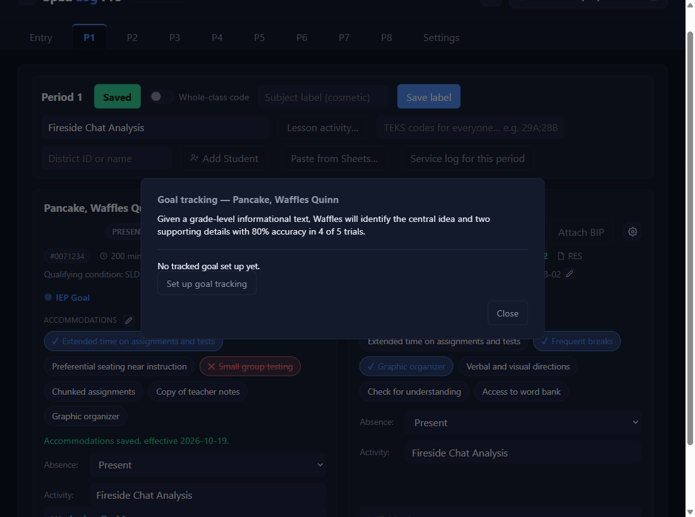
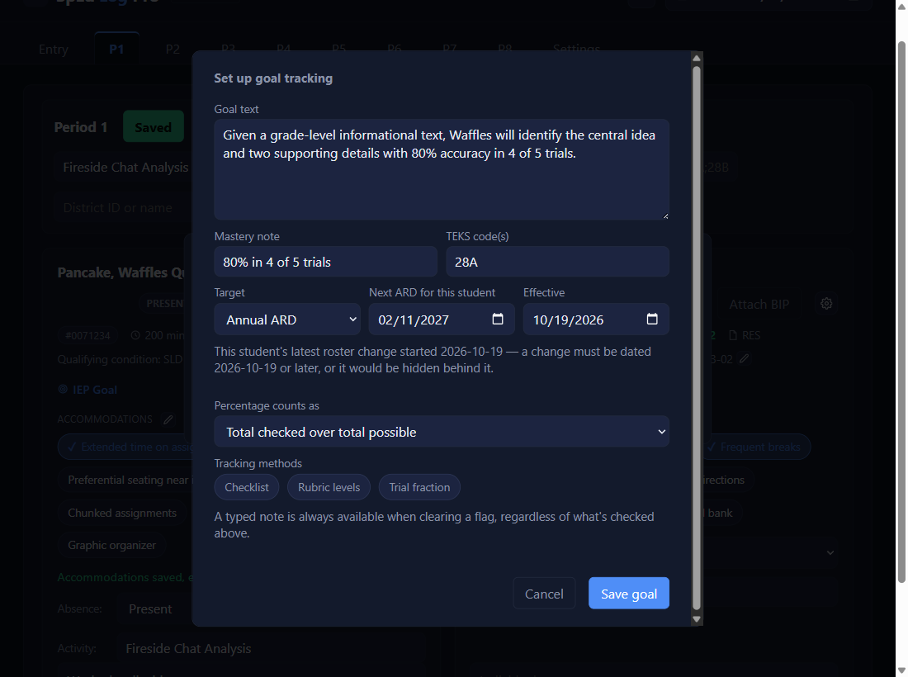
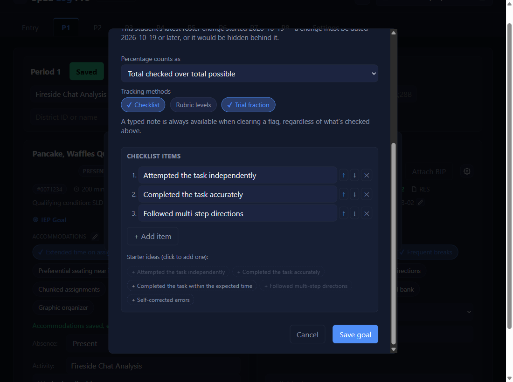
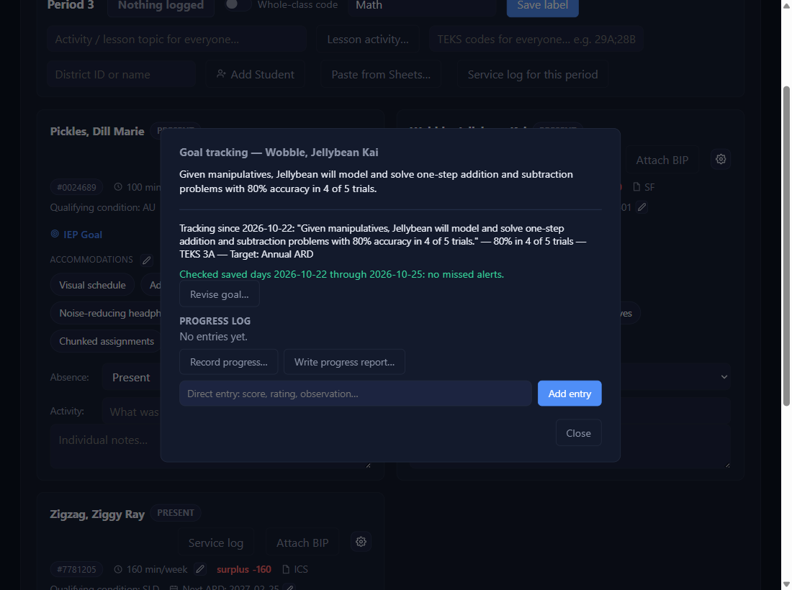

Set up goal tracking
Click the IEP Goal line, then Set up goal tracking
On the student's card, click IEP Goal. The Goal tracking pop-up opens; click Set up goal tracking.

Fill in the goal
The goal text comes from your roster. Add a Mastery note in plain words (required). TEKS code(s): the codes whose lessons count as evidence, separated by ; or ,; leave it blank if you'll measure by observation. Target: Annual ARD, where it starts (it shows the student's Next ARD date), or a fixed date. Effective is when tracking starts. Percentage counts as: how the percentages are worked out (see below).
Goal check (optional): a sentence or two on how you'll check this goal in class, for example Ask 2 to 3 questions out loud on the day's skill; record correct of asked. It shows on every Record progress pop-up, so each check is about the same size.
| Full code | Type |
|---|---|
113.41(d)(28)(B) | 28B |
111.39(c)(5)(A) | 5A |
| two codes | 28A; 28B |
28 does not match 28B. Capitals and spaces don't matter.9 of 10 (90%), another day 2 of 2 (100%).
| Choice | How it counts | The example |
|---|---|---|
| Total checked over total possible | Adds up everything checked or correct, over everything possible. A bigger entry counts more. | 11 of 12 = 92% |
| Plain average of each entry's percent | Averages each entry's own percent. Every entry counts the same, however big. | (90% + 100%) ÷ 2 = 95% |

Pick how you'll measure it
A goal is scored one way: a Checklist of criteria (add items with + Add item, or click a starter idea) or a Trial fraction (correct of total), never both. Clicking one while the other is on turns the other off, and a grey line says so. Rubric levels can sit beside either one, because a rubric never counts toward the percentage. A typed note is always available too. Then Save goal.

A goal saved before this rule with both on keeps working as it was. The next time you open Revise goal… on it, a yellow line asks you to turn one off, and Save goal is refused until you do.
Tracking has started
The pop-up shows what's being tracked. On the card, the IEP Goal title turns green.

✓ You'll know it worked
Tracking since …with the goal, mastery note, TEKS, and target.- A green IEP Goal on the card.
✕ Avoid these
- Codes run together.
28a.29breads as one code: separate them with;or,(a yellow warning appears). - Expecting a mastery verdict. The app shows the evidence; you decide.
⚠ If you see this
A mastery note is required — plain words describing what counts as mastery.Fill in the Mastery note.
Not saved: the Next ARD date must be after today …Enter the date of the next annual ARD meeting.
Nothing was saved: nothing changed from the goal already in effect.Change something, or Cancel.
Checklist and Trial fraction are both on. Turn one off before saving.Click the one you don't want.